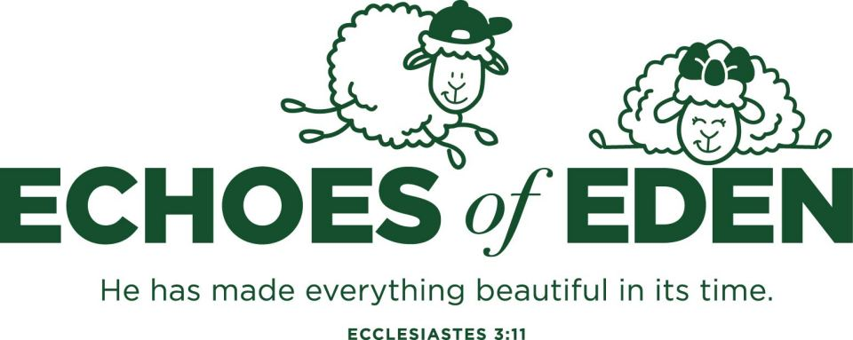

Formation
Preschool & Elementary Campus
Academics
•
Athletics
•
Fine Arts
•
Formation
At Westminster Christian School's Preschool and Elementary Campus, we believe education is more than academics. Every student is being formed in mind, body, and spirit, and that formation is the shared work of every teacher, coach, and ministry leader on campus.
Learning rooted in truth
Character built through sport
Creativity as an act of worship
Shaping the whole student
Formation is broader and deeper than "spiritual life." It names the deliberate, whole-person shaping that happens when faith, community, and character are woven into everything. It is distinctly Christian without being limited to chapel programs. It is the thread that runs through every hallway, classroom, and relationship at Westminster.
Preschool (PK3 and PK4) through 5th grade on the elementary campus.
Fruit of the Spirit, biblical values, and character formation are woven into daily campus life as students learn to reflect Christ in their words, choices, and relationships.
Bible curriculum rooted in the whole story of Scripture. Westminster has used Deep Roots since 2024.
Weekly campus-wide chapel with grade-appropriate content and worship for every student.
Dedicated weeks where PS/ES comes together for 20 minutes every morning to dive deep into a Scripture theme as a campus.
Students grow as servant leaders through age-appropriate outreach and giving initiatives.
Formation is the third and deepest arm of campus life. It is broader and deeper than any single program. It is the ongoing, intentional shaping of the whole student in faith, character, community, and calling.
Weekly campus-wide chapel anchors students in Scripture, worship, and shared story. From Preschool through 5th grade, chapel builds a common language of faith and a rhythm of gathering before God together.
Students are formed by the Word, not just informed by it. Bible engagement at Westminster includes daily Scripture, memorization, and the Bible Bee program, where students go deep into the text with purpose and joy.
Even the youngest students are given opportunities to lead. From classroom roles to Safety Patrol and Reading Buddies, students grow in confidence, responsibility, and servant leadership rooted in Christ's example.
Students learn early that following Jesus means pouring out for others. Through the Community Connect Initiative, Noisy Offering, and outreach partnerships, service becomes a way of life, not just an event.
Formation is not only corporate, it is personal. Our counselor and formation team walk alongside students in the hard moments, offering prayer, presence, and pastoral care as an extension of God's love for each child.
Chapel is the heartbeat of Formation. Every week, the elementary campus gathers to worship, hear Scripture, and grow together as a community of faith. This year, students learn to see the echoes of Eden all around them and interpret life through the story God has been telling from the beginning.

"God has made everything beautiful in its time. He has also set eternity in the human heart; yet no one can fathom what God has done from beginning to end."Ecclesiastes 3:11 • Verse of the Year
Two sheep siblings who navigate life's joys and broken moments just like our students do. Their stories bring the Echoes of Eden theme to life in an engaging, age-appropriate format designed to spark wonder and anchor faith in young hearts.
Every chapel message is anchored in God's Word, moving through a coherent narrative arc across the school year from Genesis to Revelation.
Students learn to sing, pray, and worship as a community, building habits of the heart that last long after graduation.
Chapel is one of the few moments the entire elementary campus gathers. It reinforces shared identity, shared story, and shared mission as Warriors.
Quarterly giving initiatives teach generosity in action. Students learn that following Jesus means pouring out for others.
Four times a year, the PS/ES campus picks a ministry to provide for financially and pray for. The financial offering is accomplished by collecting coins and bills for a real-world mission. Just as people in Scripture came to the well to meet, be provided for, and pour out for others, our Offering Well is where generosity overflows outward to the world.
"The water I give them will become in them a spring of water welling up to eternal life."John 4:14 • Meeting at the Well to Provide
"You will be enriched in every way so that you can be generous on every occasion, and through us your generosity will result in thanksgiving to God."2 Corinthians 9:11 • Given Much to Give Much
N.T. WrightI assume that "Christian formation" means the shaping of communities, and individuals within them, so that they reflect more fully and faithfully the fact that the Spirit of Messiah Jesus is dwelling in their midst (corporately) and within them bodily (individually). Over against any idea that being Christian involves nothing more than mental assent to a doctrine and a personal commitment to follow Jesus, both of which of course still matter enormously, the emphasis on "formation" acknowledges that Christian character, though sown like a seed in faith and baptism, needs nurturing like a young plant if it is to grow to maturity and produce the "fruit" that will exhibit God's Jesus-shaped love to the world.
Today virtually all Christians would take it for granted that, in one way or another, the Bible is central for this kind of "Christian formation." Personal reading, corporate study, expository sermons, Bible-based counseling—all these and more contribute. The Bible tells the story of God, the world, Israel, and above all, Jesus. It tells it in such a way, from many angles and in many genres, as to say to its readers: This is your story. This is your home. Learn what it means to live here.
Of course, there are many other "formative" elements: prayer, the sacraments, fellowship, service to the poor, and so on. But the Bible is central to them all.
Questions about Formation at Westminster?
Contact Mrs. Brigham at
kbrigham@wcsmiami.org